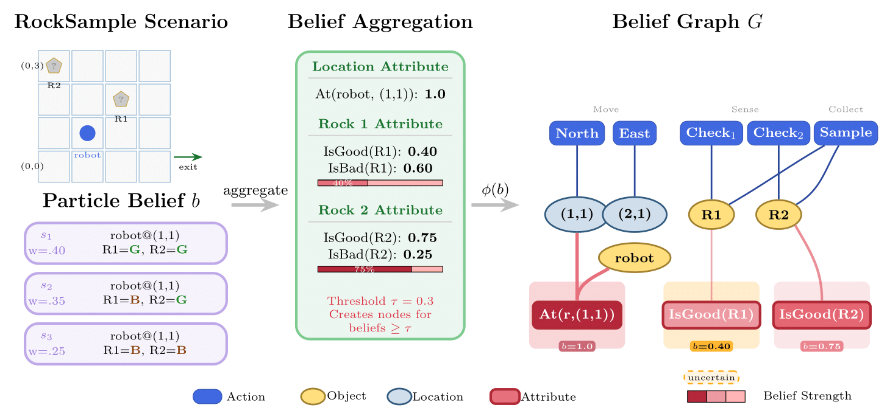
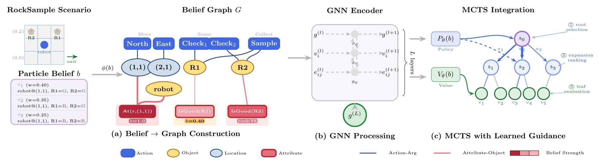

We introduce an uncertainty-aware graph representation framework for learning to guide planning in Partially Observable Markov Decision Processes (POMDPs). Unlike existing approaches that require domain or problem size specific neural architectures, GammaZero leverages a unified graph-based belief representation that enables generalization across problem sizes within a domain. Our key insight is that belief states can be systematically transformed into uncertainty-aware graphs where structural patterns learned on small problems transfer to larger instances. We employ a graph neural network with a decoder architecture to learn value functions and policies from expert demonstrations on computationally tractable problems, then apply these learned heuristics to guide Monte Carlo tree search on larger problems. Experimental results on standard POMDP benchmarks demonstrate that GammaZero achieves comparable performance to BetaZero when trained and tested on the same-sized problems, while enabling zero-shot generalization to problems with grid areas 2-6× larger than those seen during training.
Partially Observable Markov Decision Processes (POMDPs) provide a principled framework for sequential decision-making under uncertainty. This arises naturally in autonomous driving (limited sensor field-of-view), robotic manipulation (object properties inferred through interaction), and subsurface exploration (sparse observations). The ability to reason explicitly about uncertainty makes POMDPs ideal for safety-critical applications.
Online planning algorithms like POMCP and POMCPOW use Monte Carlo tree search to focus on reachable belief states. However, without effective heuristics, these methods struggle to search deep enough for long-horizon tasks where rewarding action sequences require extended information gathering.
The success of AlphaZero in fully observable games demonstrated that learned neural network approximations can effectively replace hand-crafted heuristics. BetaZero extended this to POMDPs, but requires fixed-size inputs. GammaZero pushes further by enabling size generalization through graph representations.
Existing learning-based POMDP planners like BetaZero rely on fixed-dimensional belief representations (typically statistical summaries). This creates a representational bottleneck—scaling from 5 to 10 objects requires retraining with a new architecture, making deployment expensive.
Fixed-dimensional approaches cannot process inputs of different sizes. A model trained on RockSample(5,5) simply cannot take RockSample(15,15) as input. This means expensive optimal planners must be run on each new scale, or models retrained from scratch.
While GNNs have proven effective for fully observable planning (e.g., GABAR), extending them to partial observability is non-trivial. The key challenge is encoding belief uncertainty while preserving the structural patterns that enable generalization—something not addressed by prior work.
GammaZero transforms particle-based belief states into structured graphs that capture both uncertainty and action-centric relationships. The graph topology itself encodes belief uncertainty—attribute nodes exist only when sufficient particle support justifies inclusion. This naturally handles multimodal beliefs through node presence/absence.
Graph neural networks naturally handle variable-sized inputs through local message passing. Adding more rocks to RockSample simply adds more object nodes—the graph topology and edge types remain unchanged. This allows the same trained weights to process problems of arbitrary scale.
GammaZero trains offline on expert demonstrations from small problems, learning both value functions V(b) and policies P(a|b). During execution, these guide MCTS: the policy prioritizes promising actions during expansion, and the value function evaluates leaf nodes, replacing expensive rollouts.

The graph consists of: Object nodes (entities and locations), Attribute instance nodes (properties with belief probability above threshold τ), Action nodes (parameterized actions like move, check, sample), and a Global node for graph-level aggregation. Edges encode attribute-object, action-object, and attribute-action relationships with belief-weighted features.
Rather than instantiating all possible attribute groundings, we create nodes only when aggregated particle support exceeds threshold τ. This encodes the belief distribution through graph topology (existence implies plausibility), reduces complexity by avoiding unlikely hypotheses, and enables learning from structural presence/absence.
The GNN performs L rounds of message passing where edges, nodes, and the global feature are sequentially updated. The final global embedding feeds into two output heads: V_θ(G) for value estimation and P_θ(a|G) for action probabilities. The global node enables rapid information propagation crucial for large graphs.
During online planning, learned approximations enhance MCTS in three ways: (1) Action prioritization: sample actions from P_θ instead of uniformly; (2) Value estimation: replace expensive rollouts with V_θ lookup at leaf nodes; (3) Root action selection: combine visit counts with Q-values using the PUCT formula for robust selection.

On LightDark(10), GammaZero achieves 17.5±1.2, outperforming BetaZero's 16.77±1.28. On RockSample(15,15), GammaZero achieves 20.5±0.8 compared to BetaZero's 20.15±0.71. Both learning-based methods substantially outperform classical planners like POMCPOW (11.14±0.59), validating that learned heuristics are effective.
GammaZero trained on RockSample(5,5) to (10,10) achieves strong performance on (15,15), (20,20), and even (25,25). On MultiObjectSearch, training on 2-3 objects generalizes to 4-6 objects. This unique capability—impossible for fixed-dimensional methods like BetaZero—decouples training complexity from deployment scale.
Across all domains, GammaZero's performance degrades gradually rather than catastrophically as problem size increases beyond training distribution. Even on RockSample(25,25), where classical planners timeout, the raw policy network achieves best performance (4.8±1.2), demonstrating structural pattern transfer.
| Domain | GammaZero | BetaZero | Classical Baselines | ||||||
|---|---|---|---|---|---|---|---|---|---|
| Full | Raw Pθ | Raw Vθ* | Full | Raw Pθ | Raw Vθ* | POMCPOW | DESPOT | AdaOPS | |
| LD(10) | 17.5±1.2 | 14.4±1.3 | 13.3±1.4 | 16.77±1.28 | 13.74±1.33 | 12.70±1.46 | 0.68±0.41 | 0.43±0.36 | 5.22±1.77 |
| RS(15,15) | 20.5±0.8 | 11.1±2.0 | 9.1±2.2 | 20.15±0.71 | 10.96±0.98 | 9.96±0.65 | 11.14±0.59 | 18.44±0.69 | 20.67±0.72 |
| MOS(5,3) | 18.0±1.5 | 10.8±1.8 | 9.9±2.0 | --- | 7.5±1.5 | 6.4±1.8 | 15.5±2.0 | ||
| RG(5,2) | 12.5±2.0 | 5.6±2.2 | 6.3±2.0 | --- | 4.3±1.5 | 3.4±1.5 | 7.7±2.0 | ||
| Test Domain | GammaZero (zero-shot transfer) | Classical Baselines (per-size) | ||||
|---|---|---|---|---|---|---|
| Full | Raw Pθ | Raw Vθ* | POMCPOW | DESPOT | AdaOPS | |
| LightDark(10) | 15.2±1.5 | 12.1±1.6 | 11.2±1.7 | 0.68±0.41 | 0.43±0.36 | 5.22±1.77 |
| RockSample(15,15) | 17.8±1.2 | 11.1±2.0 | 9.1±2.2 | 11.14±0.59 | 18.44±0.69 | 20.67±0.72 |
| RockSample(20,20) | 10.2±1.8 | 5.4±1.0 | 4.4±2.0 | 10.22±0.47 | 0.0±0.0† | 11.66±0.49 |
| RockSample(25,25) | 3.5±2.0 | 4.8±1.2 | 3.9±1.5 | 2.1±0.8 | 0.0±0.0† | 4.2±1.0 |
| MOS(6,4) | 14.5±1.8 | 8.8±2.0 | 8.1±2.2 | 5.5±1.6 | 4.8±1.8 | 12.2±2.0 |
| MOS(7,5) | 11.2±2.0 | 6.5±2.2 | 6.0±2.3 | 3.8±1.8 | 3.2±2.0 | 9.0±2.2 |
| MOS(8,6) | 8.0±2.2 | 4.8±2.5 | 4.5±2.5 | 0.0±0.0† | 0.0±0.0† | 5.8±2.5 |
| Rearrange(6,4) | 9.2±2.0 | 4.5±2.3 | 5.0±2.2 | 3.0±1.6 | 2.4±1.8 | 5.8±2.0 |
| Rearrange(7,4) | 6.8±2.2 | 3.2±2.5 | 3.8±2.3 | 0.0±0.0† | 0.0±0.0† | 4.0±2.2 |
| Rearrange(8,5) | 4.5±2.5 | 2.2±2.5 | 2.8±2.5 | 0.0±0.0† | 0.0±0.0† | 2.5±2.5 |
Both the policy network P_θ and value network V_θ contribute to GammaZero's performance. The "Raw P_θ" column shows policy-only performance (without MCTS), achieving 60-80% of full performance. The "Raw V_θ*" column shows one-step lookahead with the value network. The combination through MCTS consistently yields the best results, confirming that both networks provide complementary guidance for effective planning.
Rather than instantiating nodes for all possible attribute-value assignments, we create nodes only when aggregated particle support exceeds threshold τ. This allows the graph structure itself to encode the belief distribution—node existence implies plausibility—while reducing computational complexity by pruning unlikely hypotheses.
Edge features capture multiple layers of information: one-hot encoding of edge type (action-object, attribute-object), edge role (owner vs. value), belief strength (probability), and particle support level (unanimous >95%, strong 70-95%, weak 30-70%, split <30%). This enables the model to distinguish confident beliefs from uncertain hypotheses.
The global node aggregates information from all nodes and edges at each message passing round. Without it, information would need to flow through many hops to reach distant parts of the graph. As problems scale up, this shortcut becomes essential—it allows the model to maintain a comprehensive view of the planning state regardless of graph size.
The graph construction is domain-agnostic—the same principles work for robot localization (LightDark), information gathering (RockSample), target search (MultiObjectSearch), and manipulation (Rearrangement). The model learns to interpret structural patterns (e.g., "high entropy on attribute nodes connected to an action indicates information-gathering value") rather than domain-specific features.
We collect training data by running optimal or near-optimal planners on small problem instances. For each belief state encountered, we query the expert for the optimal action and Q-values, then compute discounted returns via backward induction. Training takes 2-4 hours per domain on an RTX 3080.
Given a particle belief, we construct a graph with four node types: Object nodes (entities and locations), Attribute instance nodes (created when particle support exceeds threshold τ), Action nodes (parameterized actions), and a Global node. Edges encode attribute-object, action-object, and attribute-action relationships with belief-weighted features.
GammaZero uses a GNN with 3 hidden layers. During online planning, we use PUCT exploration with c=50 for action selection within MCTS, with progressive widening parameters k_a=2.0, α_a=0.9 for actions. The network outputs both a value estimate V_θ and action probabilities P_θ.
LightDark: 1D localization with noisy observations improving near "light" region. RockSample(n,k): Information gathering on n×n grid with k rocks of unknown quality. MultiObjectSearch(n,k): Target localization finding k hidden objects on n×n grid. Rearrangement(n,k): Mobile manipulation transporting k objects with unknown positions to goal locations.
While GNNs have proven effective for fully observable planning, their application to probabilistic belief spaces of POMDPs remained unexplored. GammaZero is the first to successfully combine graph-based generalization with belief uncertainty encoding, opening new possibilities for scalable POMDP planning.
GammaZero decouples training complexity from deployment scale. We generate expert demonstrations where optimal planning is tractable (small instances), then deploy learned heuristics on problems where such planners would be prohibitively expensive. This one-time training cost amortizes across all future deployments at any scale.
Long-horizon POMDP planning requires both effective uncertainty reasoning and the ability to search deeply. GammaZero addresses both: the graph representation captures belief uncertainty, while learned approximations guide MCTS to focus on promising action sequences. This combination enables effective planning in domains previously intractable for online methods.
@inproceedings{mangannavar2026gammazero,
title={GammaZero: Learning to Guide Belief-Space Search for Long-Horizon POMDPs with Generalizable Graph Representations},
author={Mangannavar, Rajesh and Lee, Stefan and Fern, Alan and Tadepalli, Prasad},
booktitle={Proceedings of the AAAI Conference on Artificial Intelligence},
year={2026}
}